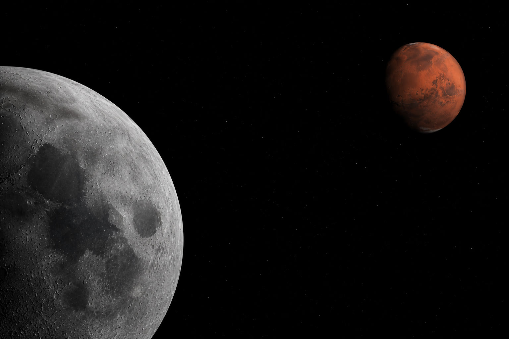
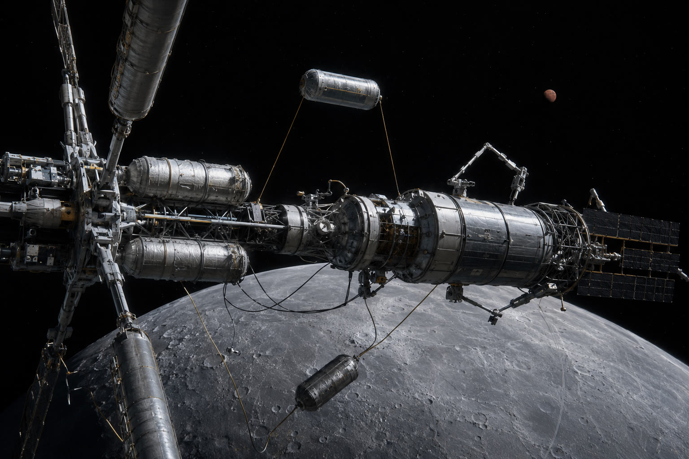

There is a strange asymmetry in how we talk about space. We spend enormous energy imagining life on Mars — the domes, the settlers, the first city — and almost none on the part that actually decides whether any of it happens: getting there, in volume, again and again, affordably. The destination is vivid. The transport is an afterthought. But the transport is the whole problem, and it is unsolved.
That is where the Moon comes in, and it is not as a place to live. It is as the place everything else gets provisioned.
01Start with water
If you were going to build anything beyond Earth, the first thing you would look for is water — and not to drink. Water is propellant. Split it and you have hydrogen and oxygen, the two things a rocket needs most and the two things most expensive to drag up out of Earth’s gravity. A body that has water, sitting at the top of a shallow gravity well, is not a science curiosity. It is a fuel supply positioned exactly where the rest of the solar system becomes reachable.
So the first move is the one nearly everyone already agrees on: find the water, and learn to turn it into fuel where it sits. Not because a base needs a drink. Because everything past the Moon needs a full tank, and the Moon is the cheapest place in the neighborhood to fill it.
02The Mars problem is a transport problem
We talk about Mars as a place we will live. We should talk about it, first, as a place we have to reach — thousands of tonnes of vehicle, crew, and cargo, on a schedule, more than once. At those volumes the limiting factor is never enthusiasm. It is propellant and staging: how much fuel you can put where it’s needed, and how much vehicle you can assemble without forcing every kilogram up through an atmosphere.
Launching a Mars-class ship whole, from Earth’s surface, fully fueled, is the hard way to do everything. The easier architecture is older than the rockets: build big things where they operate, and fuel them close to where the fuel is. That means assembly in orbit and in cislunar space, and propellant drawn from the Moon rather than hauled from the ground.

03The dry dock
Follow that logic and the Moon stops being a base and becomes a yard. The vehicles that go to Mars and beyond are large, fragile, and best assembled where they never have to survive a launch. They are cheaper to build off Earth, cheaper to fuel off Earth, and — for the highest-performance deep-space propulsion, the kind you operate far from any atmosphere — they can only be built and staged off Earth. That is not a distant fantasy bolted onto a Moon program. It is the natural endpoint of one. A place with fuel, vacuum, a shallow gravity well, and room to work is a shipyard whether or not anyone calls it that yet.

We are not proposing to build those ships tomorrow. We are pointing out that the infrastructure a lunar base needs anyway — water, power, a way to move things around, a way for people to live and work there for longer than a visit — is the same infrastructure that turns the Moon into the place the rest of the solar system launches from. Build the base well, and you have already started building the on-ramp.
04What we build
This is the layer we work on: the unglamorous, load-bearing part underneath all of it. Water as the network commodity, converted to fuel where it’s needed. The power and utilities a persistent operation runs on. The staging and depot architecture that lets vehicles be fueled in the right place at the right time. A habitat that lets a workforce stay — not rotate home every few months, but live and work in cislunar space long enough to actually build something.
None of that is a Mars mission. All of it is the reason a Mars mission, at volume, becomes possible. The destination gets the headlines. The on-ramp is what we’re here to build — and it’s the part that has to exist first.